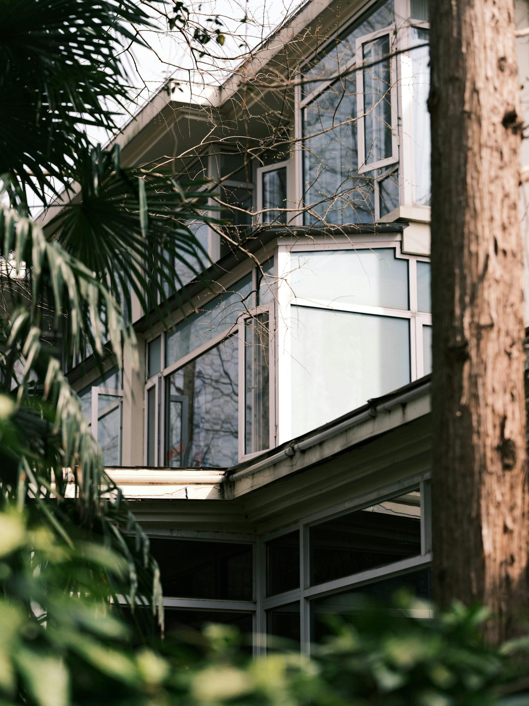

Residential / Concept 01Courtyard House
A home organised around a quiet patch of sky. Deep thresholds, warm materials and rooms that borrow light from one another.
Three architectural explorations, from a private courtyard to a shared reading room. Photography is visual inspiration, not completed client work.
Choose a typology to explore.

Residential / Concept 01A home organised around a quiet patch of sky. Deep thresholds, warm materials and rooms that borrow light from one another.
A neighbourhood reading room imagined as a generous living room: flexible shelves, soft daylight and a table that brings people together.
A compact retreat for work and rest. A simple timber volume opens toward the garden while keeping the street at a distance.